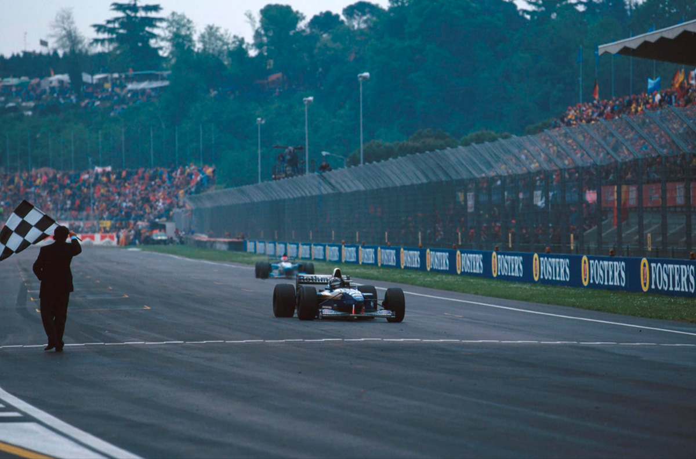
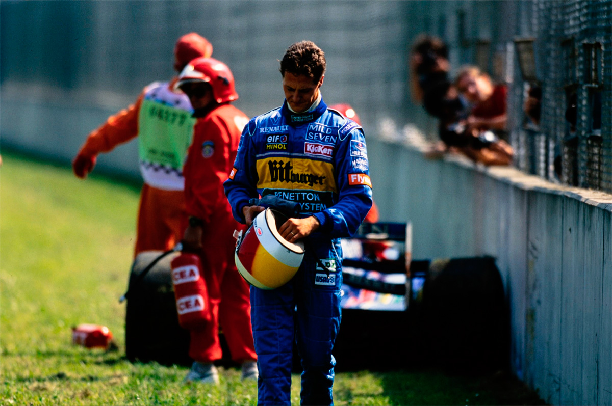
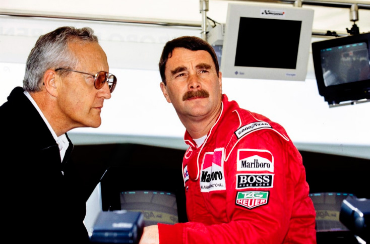
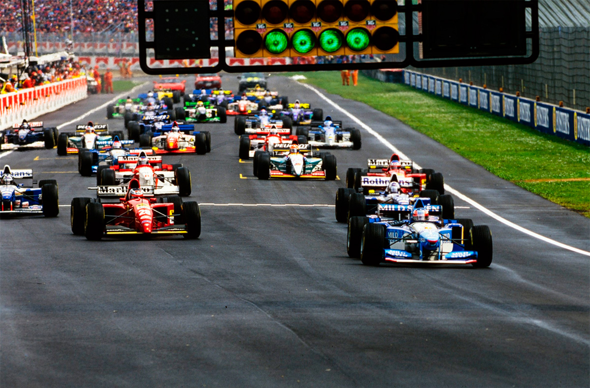
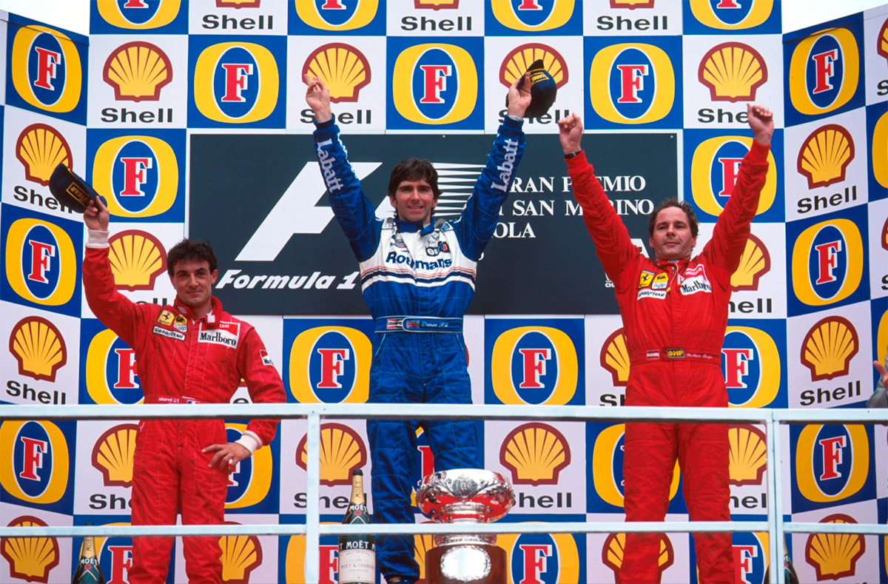
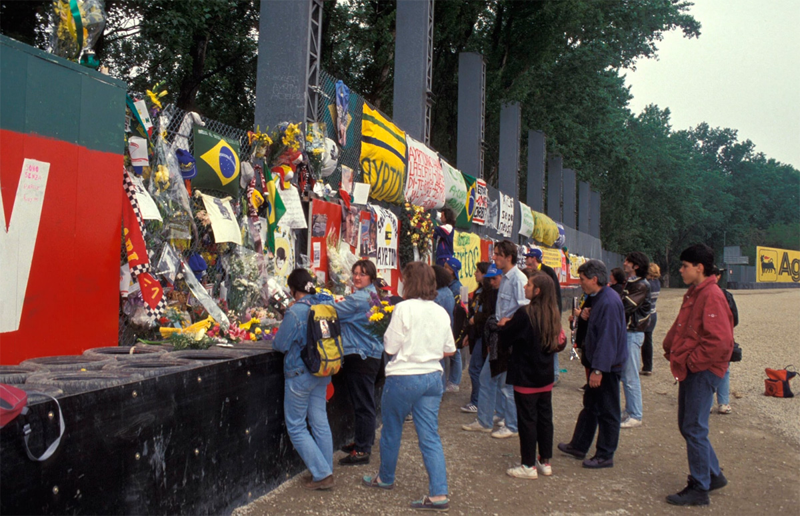

HILL, F1 E FERRARI RENASCEM

Inteligente vitória de Hill exorcizou terrível GP de 1994, depois de Schumacher bater. Ferrari competitivos: Berger lidera, mas perde em parada de box, e Alesi é 2º depois de briga com Coulthard. Barrichello abandona nos pontos. Semana de homenagens a Senna.
Por Francisco Santos
Não foi fácil regressar a Imola, ao lugar que um ano antes tinha vivido o GP mais negro da F1. Apagar as mortes de Ratzenberger e Senna não seria fácil, mesmo para as mentes unidirecionadas da gente da F1. Todos sentiram o peso da terrível recordação de momentos pungentes e tristes. No entanto, com profissionalismo, a F1 soube exorcizar os traumas de 94 e oferecer à memória dqos desaparecidos um GP digno de seu nome, uma competição limpa, sem discussões nem politicagens. No início da temporada europeia foi o renascimento da F1, e, ali bem perto de Maranello, as performances da Ferrari deram dupla alegria aos fervorosos italianos.
Sonho no fim do pesadelo
A Fórmula 1 conseguiu, realmente, neste nova pista mais segura, sair do pesadelo em que vivia há um ano e começar a sonhar de novo. Depois dos recentes tristes eventos político-desportivos, Imola viveu um fim de semana de reverência aos ídolos desaparecidos, de demonstração de uma nova fase, mais segura, e, quem sabe, mais competitiva e sadia. Logo na primeira qualificação, Berger, ao ficar apenas a 0,008s de Schumacher deu fundadas esperanças aos “tiffosi” para lotarem o circuito nos dois dias seguintes. Domingo de manhã, na chuva do warm-up as duas Ferrari fizeram os melhores tempos, graças ao seu perfeito acerto para pista molhada. Na corrida, alguns fatores determinaram o espetáculo esportivo: as condições atmosféricas, a batida de Schumacher, a desastrosa parada de Berger no box, e a prova serena e inteligente de Hill.
Corrida sem chuva Ferrarista
Entre warm-up e a corrida parou de chover. Pior para a Ferrari, cujos carros eram superiores em chuva. A pista permaneceu apenas ligeiramente molhada. Os seis primeiros do grid largaram com pneus biscoito. Depois de liderar as primeiras voltas, Schumacher trocou para slicks à 9ª volta e ao voltar à pista saiu violentamente na lombada antes de Piratella. Coulthard herdou a liderança por uma volta antes de trocar de pneus. Berger, que mantinha o mesmo trem de corrida do alemão, passou para primeiro com uma vantagem de 13s sobre Hill graças à sua visão de ter sido o primeiro a trocar para slicks à 5ª volta numa pista que a passagem de 26 carros secara. Para alegria dos italianos, Berger manteve com relativa facilidade sua vantagem. Hill mantinha-se na frente de Coulthard e Alesi, que brigavam ferozmente. À 22ª volta Berger pára no box. À semelhança do que acontecera em 94 em Monza, com Alesi, foi um desastre: O motor morreu e com ele as esperanças dos “tiffosi” – parada de meio minuto e descida para 4º. “No warm-up já sentira alguma coisa de errado com a embreagem, e pensei em manter as rotações em cima durante as paradas, mas foi pego de surpresa”, lembrou ele, desanimado. Coulthard, em dia negativo, teve uma saída em que danificou um aerofólio dianteiro, foi perdendo 2s por volta, e foi penalizado com um “stop & go”, pelo que Berger conseguiu chegar em 3°, atrás de um Alesi furioso com Coulthard pelas manobras deste. Hill fez uma prova calma e inteligente, mantendo-se fora de brigas e andando o suficiente para ganhar com o melhor carro e passar a liderar o campeonato. Mansell, estreando o McLaren, chegou a ser 5° por via das paradas de outros, mas abandonou. Foi Hakkinen quem ganhou 2 pontos. O último ponto foi para Frentzen com o lento Sauber ainda muito sub virador, apesar da nova aerodinâmica, agora com bico alto. Rubinho teve um espetacular início de corrida: de 10° no grid pulou para 5º, com o Jordan com novos fundo e difusor e motor Peugeot de nova especificação. Uma decisão estranha da equipe em colocar 100 litros no primeiro dos 3 reabastecimentos previstos deixou o carro muito pesado e inguiável, na disputa de posição com Mansell. À 31ª volta, na frente de Hakkinen, o câmbio do Jordan quebrou.

OS TREINOS
Na 5ª feira, houve duas sessões de habituação ao novo traçado. De novo, Alesi foi o mais rápido, com 1m30,081s. A Renault tem a nova versão RS7A do motor V10, que graças a uma nova distribuição e novo coletor de admissão tem mais binário. Coulthard iniciou os treinos do modo como os deixara na Argentina – melhor tempo na 6ª de manhã, o único a baixar para 1m27s, com 0,784s de vantagem sobre Schumacher. À tarde, a qualificação foi empolgante, com Alesi a estabelecer o ritmo,com 1m28,741s logo aos 12 minutos. As 13h24m, Coulthard baixou 0,399s; Schuymy foi o primeiro no segundo 27, mas Hill bateu-o; cinco minutos depois Schumy, mais à vontade com as modificações introduzidas no Benetton depois de 1 semana de testes em Jerez, recuperou a pole. Alesi sai para a pista, mas uma rodada de Irvine rouba-lhe qualquer chance. Mas, Berger, lança-se para uma derradeira tentativa, a 10s do final: em Itália, uma Ferrari na pole é um sonho, e durante esse minuto e meio os “tiffosi foram ao delírio com a performance do austríaco que ficou a apenas 0,008s de Schumacher. Mesmo assim, uma Ferrari na 1ª fila foi suficiente para depois lotar o circuito. Montermini teve um susto: em alta velocidade foi atingido por um pássaro.

No sábado de manhã, habitual concentração das equipes nos acertos para a prova, e de notar apenas uma saída em frente de Hill (apoiou nos dois pedais ao mesmo tempo) e uma batida forte de Schumacher na Variante Alta, que arrancou uma roda ao Benetton. Hakkinen foi terceiro, atrás dos dois Williams. A tarde, com a temperatura mais alta, as performances sofreram. Entre os seis primeiros apenas Hill melhora, ambos as Ferrari rodam, o mesmo acontecendo com Morbidelli, Barrichello e Herbert, que se ressente de falta de troca de informações com Schumy, que mantém a pole. Berger, nos últimos momentos confunde uma mensagem de rádio, pensa que Coulthard se apossara da pole, fez uma tentativa desesperada e acabou na caixa de brita. Mansell ficou com o 9° tempo, 1,2s atrás de Hakkinen, em 6º. Os Forti projetados por Sérgio Rinland continuaram uma desgraça: em média, 9s (!!!) mais lentos que o pole, apesar de já terem tomada de ar dinâmica.

A CORRIDA
Meia hora antes da corrida, Berger foi à torre de controle saber das previsões atmosféricas. Voltou com ar desiludido. Não se previa continuação da chuva do warm-up, que tinha permitido às Ferrari os dois melhores tempos. A pista ainda tinha alguns trechos molhados, pelo que os seis pilotos da frente optaram por usar pneus biscoito numa pista já por só escorregadia com seu novo asfalto. Esta medida cautelosa traria proveito: quando se poderia esperar uma carambola na primeira chicane, de Tamburello, todos os 26 carros chegaram salvos, não só ao final da primeira volta, mas até à 10ª quando se deu a primeira saída de pista, com a violenta batida de Schumacher que terá ajudado a decidir a prova. Terá sido roda mal apertada na parada de box? Terão sido pneus ainda demasiado frios? Estranho para um piloto já com experiência. Algo de anormal se passou para o campeão ter perdido controle do carro de jeito súbito.
“II Leone” é o primeiro a bater
Bem, na realidade houve quem batesse logo na 1ª volta: Mansell deu um toque na traseira do Arrows de Morbidelli, provocando-lhe um furo e ficando com o aerofólio dianteiro do McLaren danificado. Parando para trocar pneu, Morbidelli terminou sua primeira corrida de 95. Depois do abandono do campeão, a corrida ficou apenas entre os dois pares de Williams e de Ferrari, com o incidente da embreagem da Ferrari de Berger nos boxes aquando de sua segunda parada, apenas a precipitar o desfecho da corrida. É previsível que mesmo sem o atraso sofrido por Berger. Hill viesse a se impor, já que a superioridade Williams em piso seco acabaria por ditar sua lei. Hill foi cauteloso e ajudado pela infelicidade alheia conquistou sua 11ª vitória em apenas 37 GP, o que é impressionante.

Pilotos difíceis de passar
Numa pista em que as ultrapassagens ficaram mais difíceis com a introdução de novas chicanes, houve alguns casos gritantes de mau comportamento desportivo: Badoer, logo dobrado à 5ª volta, depois da batida com Wendlinger, foi uma autêntica chicane ambulante para os pilotos mais rápidos, obstruindo sucessivamente suas ultrapassagens. O caso de Katayama com Hill foi simplesmente ridículo: o líder da prova ultrapassa o japonês na aproximação de Rivazza e, eis que para espanto geral, o piloto da Tyrrell repassa o Williams na saída da curva. “Será que ele pensava que estava na mesma volta, ou que liderava a prova, para estar a passar-me?”, ironizava Hill. Uma volta depois Ukyo saía da pista e abandonava. Apesar de pequenos atritos, foi uma corrida sem acidentes de vulto. Imola já havia tido sua quota de dramas…
UM ANO DE SAUDADE POR SENNA

Na semana anterior, o fatídico muro de Tamburello ficara repleto de flores, de cartas, da saudade do mundo escarrapachada com dor naquela parede. 1º de maio, em São Paulo foi dia de chorar Ayrton. Muitos, para afogar a tristeza da saudade. Outros para alimentar as recordações de quem tanto nos deu, de orgulho de brasileiro, de exemplo de tenacidade por um objetivo. Por todo o lado sentia-se a presença de Ayrton. No rosto triste do moleque. Na bandeira que um velho segura, com raiva e tristeza. Na gigantesca bandeira que a TAS (Torcida Ayrton Senna) pendurou de um aqueduto sobre a Marginal do Tietê, na Zona Norte da cidade, perto: “Acelera Ayrton! Esteja onde estiver”. Principalmente no Cemitério do Morumbi. Passando o Rio Pinheiros, que atravessa a zona sul da cidade, todos os caminhos da grande peregrinação estavam indicados. Nem seria necessário, pois à beira das avenidas, nos cruzamentos, faixas, estendais com camisetas de Ayrton, iam aumentando este colorido fúnebre, mas alegre na sua ânsia de querer recordar e reviver o grande ídolo. Chegando já perto do Cemitério, aumentava a profusão de bancas com todo o tipo de artigos alusivos ao tricampeão: bonés, camisetas, miniaturas, capacetes, sei lá – tudo o que lembrasse Ayrton. Era todo um povo querendo agarrar-se à imagem de seu herói. Fosse um pedaço de pano, uma foto, um CD com o hino da vitória, fosse o que fosse.
O povo, comovido na sua festiva saudade, apinhava os acessos do Cemitério cuja entrada mais parecia a de um estádio de futebol em dia de clássico paulista. Este era, também, um dia muito especial na vida do paulistano. Tratava-se de mostrar o sentimento de perda de um herói, e essa dor não é menor que a alegria de uma vitória no futebol ou que as tantas dadas por Ayrton. Foi isso que vi, atônito, ao passar o portão do Cemitério. A quase chocante corrida às lembranças era agora uma comovente massa compacta de fiéis devotos e silenciosos esperando sua vez numa interminável e sempre renovada fila de centenas de pessoas. Circundando o ipê no centro do gramado das campas, gente de todas as idades, pobres, ricos, homens, mulheres, paulistas, gaúchos, franceses, brancos e negras, japoneses sem fim, esperavam sua vez para, de uma genuína comoção e respeito, passarem entre a cada vez maior e nova pilha de flores, de cartas, de fotos, de faixas, para ficarem ali, parados por uns segundos olhando com olhos embaciados a placa com o nome de Ayrton Senna da Silva: 21/03/1960 – 01/05/1994. Uma senhora fica petrificada olhando a piaca. De repente começa a chorar comovidamente. Depois, uma negra de cabelos brancos, altiva e de figura imponente, irrompe num canto choroso, erguendo a mão para o céu azul, com o sinal da vitória. É a homenagem de todos os órfãos de Ayrton. Na véspera, o professor gaúcho Luciano Alves Jr, de 23 anos, imaginou ouvir a corrida de San Marino junto do túmulo. Aquele será, para sempre, um lugar de peregrinação. Com a devoção de um povo venerando seu herói. Nessa tarde, a TAS realizou uma cerimônia no Memorial da América Latina, e o Cardeal Dom Paulo Evaristo Arns celebrou missa na Catedral da Sé de São Paulo. Em Imola, o padre Amedeo Zuffo, que deu a extrema-unção a Senna, celebrou missa mesmo junto ao muro de Tamburello. No Rio de Janeiro foi inaugurado um monumento a Ayrton. Em Maranello houve exposição fotográfica homenageando Ayrton. Na Quinta do Lago, Algarve, foi dado o nome dele à rua onde tinha sua casa de praia portuguesa. Em todo o mundo esta foi uma semana de homenagens ao maior piloto dos últimos anos.
A família Senna decidiu fechar-se na sua dor e não participar em qualquer ato: “O Ayrton continua conosco, em nossa memória, em nossos corações e no nosso cotidiano através do Instituto Ayrton Senna. A melhor maneira de homenageá-lo e reverenciarmos sua memória é trabalhando pelo instituto, um sonho que, infelizmente, não realizou em vida”, afirmou Viviane Senna, irmã do piloto e Presidente do Instituto Ayrton Senna. O IAS já conseguiu arrecadar – com os royalties do nome Senna e do personagem Senninha – mais de US$4 milhões para suas obras de apoio a crianças carentes. Viviane apresentou em Itália, na 4ª feira antes do GP de San Marino, uma linha de óculos Senna.